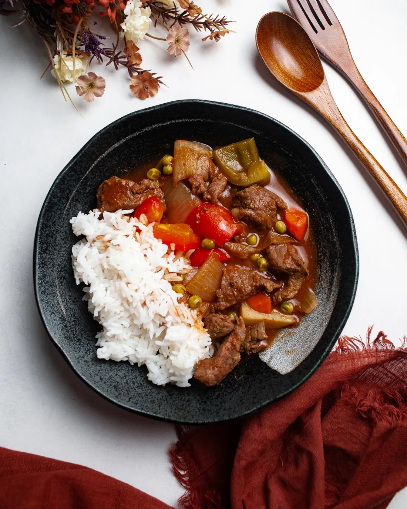

Our Bestsellers

Kapeng Barako
Strong, bold, and proudly Filipino—our locally sourced barako coffee.

Crispy Kare-Kare
A modern twist on the classic — crispy pork served with creamy peanut sauce and bagoong.

Beef Kaldereta
Rich and hearty Filipino beef stew slow-cooked with vegetables and savory tomato sauce.